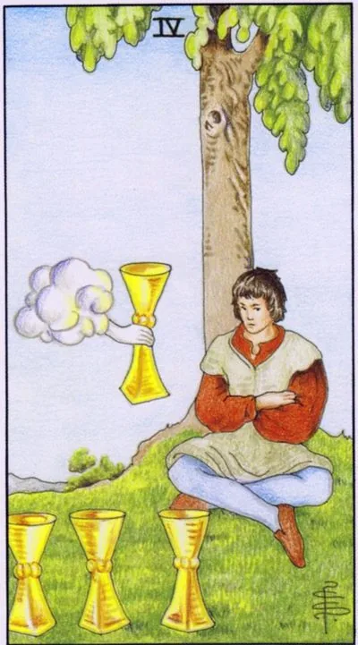

Minor Arcana · Cups
IVFour of Cups
The person does not see the bowl offered: apathy, satiety and chances lying right under his nose.
Archetype and core meaning
The young man sits under a tree with his arms crossed; he has three bowls in front of him, and the fourth one is reached out from a cloud, he looks past. Waite's drawing is precise to the point of cruelty: the man is so consumed with discontent that he does not notice the gift.
Traditionally, the card means apathy, satiety and a missed sentence. It's not grief, it's emotional anesthesia: everything is "normal" but nothing is pleasing. Sometimes the Four describes the necessary pause in maturation and the honest question "What do I want?" The only danger is to delay the pause so that the look never rises.
Daily life
The day is gray: your favorite activities don't take up, the TV shows go in the background, the food is not good. Don't fight the pause force, but don't stick: do one little unusual thing - another route home, call an old friend, a dish that has never been cooked.
Work and career
Professional plateau: problems are solved by inertia, interesting sentences seem like repetition of what you've been through. Right now, it's easy to miss a chance that you'll later call a turning point. Don't sign up hot, but don't swing away automatically -- consider every sentence for at least a day.
Relationships
Emotional satiety for the future: the partner is there, and it seems that he is not; one of the two has gone into himself and does not respond to attempts of rapprochement. The lonely card is honest: there are candidates, but “all are not.” Ask yourself: has the world become worse or the ability to wonder temporarily shut down?
Health
Apathy has physiology: lethargy, drowsiness, sweet cravings. The body needs a gentle reset, not stimulation -- sleep patterns, phone-free walks, less caffeine. It's worth checking vitamin D and ferritin, the physical cause of grayness is more common than people think.
Spiritual meaning
The contemplative side is underrated: the young man under the tree is like a hermit before illumination. In spiritual practice, this is a time of great silence, when old desires must be heard to hear a new call. The hand from the cloud will remind us that help is always near, it is only a matter of looking.
The look is raised: stagnation ends, the offer is noticed, curiosity and appetite return to life.
Archetype and core meaning
The man finally lifts his head from the ground and sees his hand with the cup. The stagnation that seemed eternal was only a long breath; the apathy retreats not from volition, but from the spark — the casual conversation, the morning when I wanted to get up before the alarm clock.
Traditionally, it's the way out of hibernation: accepting a long-suspended sentence, ending fruitless regrets, recapturing the ability to want. The flip side is the risk that the contemplation period has become an end in itself, and finding yourself has become a screen of fear of living. The test is simple: did action come, not just thoughts?
Daily life
The house comes alive: the accumulated business is done easily, the desire to cook and receive guests returns, the hunt for the smallest things awakens - flowers in the apartment, the pool, disassembled mezzanine. Use the lift immediately: the energy of awakening is valuable in the first days, until inertia catches up.
Work and career
The fog is dispelling, the task has made sense, or there's an offer worth moving for, and it's a good time to accept the previously rejected option of going back to negotiations, taking the project, and determination now works better than the perfect plan: step first, then clarity.
Relationships
Relationships are given a second chance: the partner is seen again, with strangeness and warmth; the conversation, which has been uncooked for months, passes quietly; lonely people begin to respond to messages and agree to meetings; the first step is no longer perceived as defeat; reconciliation is possible.
Health
The tone increases day by day: deep sleep is restored, appetite is normalized, the body asks for movement. Set the effect in a regimen: light in the morning, water, reasonable exercise. The body that rests in pause gains shape surprisingly quickly.
Spiritual meaning
Spiritual meaning is gratitude as a key: a door that is not amenable to effort opens with a simple thank you. The practice of reclaiming interest is a list of daily little joys, awareness in everyday activities. The gift was always there; the direction of the gaze was not the hand of the cloud, but the direction of the gaze.
🌿 How the school reads this rank
The main idea
A recurring emotion. A person returns to a familiar feeling because they like it.
How it manifests
In relationships, it's a nice repetition of familiar love and intimacy, in work, it's fun to do things, it's good to be comfortable as long as it doesn't stop you from moving on.
The shadow side
The familiar emotion becomes bored and becomes dependent on the previous sensations.
Keywords
emotional habit · comfort · repetition · pleasure · satiety
📜 In detail — from the rank lecture
Essence of the card
The classics polemic: the direct card is not "non-involvement," but engagement -- the person "revises his emotions over and over again, he's immersed in them"; non-involvement is inverted.
Upright position
- Frame: Three — dancing and cocktails in the club; four — you went home and sit alone: “it was cool, great, we need to repeat.”
- Direct: The pleasant emotion is played out — "I love you" can be listened to endlessly, three or four times please"; positive emotion is not boring. As long as repetition does not prevent you from moving forward, "there is nothing wrong here."
- Work: What you like and return to over and over again; the joy of a quarterly report overshadows the downsides of routine.
Negative meaning
Emotions become boring, "repeatability of emotions is bad"; one step before dependence on familiar sensations; possible delusion (Mara). Cups often show problems with alcohol: the shape of the bowl itself contributes, and alcohol - an enhancer of emotions: "sadness multiplies, joy increases."
School emphases and distinctive points
- The fourfold thesis combines the idea of all four elements – the repetition of form, desire, thought, emotion; therefore, the suit is almost self-evident.
- There is no astrology in this lecture: neither houses nor planets - he gives their system according to the senior arcana; there is no Slavic series (even the bath does not call it - just "the mid-summer holiday"), Banzhaf is not quoted, health as a topic is not.
- Dilutes the classical meanings by the elements: “ignored opportunity” of the four cups – rather wands / swords: “fire and air work in pairs”, heat each other.
- Tetramorph in consultation: all four elements work always, only one brighter - revels in joy (cups), weighs (swords), the body demands (pentacles), looks back at the society (wands).
- The satiety is not on the four: it is an even repetition; the saturation lies in the inverted seven/eight/nine; the eight is “already two fours”, the rhythm of repetition.
- The formula of the poles: “the card is the same ... just how you relate” – like repetition, means straight; tired – inverted.
- Literature and History: E. M. Forster and post-Victorian England on the eve of World War I; Masonic initiations; St. Augustine on the Heart Who Knows No Peace (through the frame of the three); Buddhism - Buddha under a tree, Mara with daughters-"charit", a parallel with demons sending saints naked women.
- Cinema: “Little Buddha” – direct recommendation; Gogol’s story of Homa Brut (the cycle “Evenings at a farm near Dikanka”): three nights in the chapel, a circle of chalk and “Our Father” against devils – a portrait of the comfort zone of the four swords, where you talk only to yourself and God.
- Practice/chat examples: Ivan Ivanovich’s reception room in Gazprom – a sofa, an interesting secretary, and you get a fourth cup of waiting coffee; a partner bringing coffee to bed every morning until you want “at least champagne.”
Keywords
Repeated emotion; “it was cool, we need to repeat”; comfortable habit; dependence on emotions.